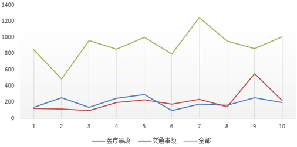
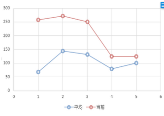
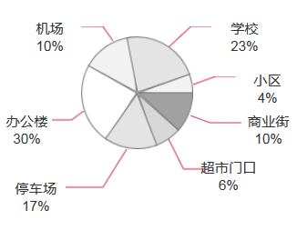
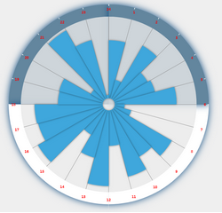
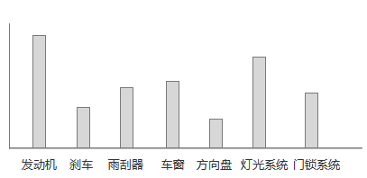
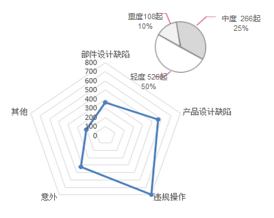

重庆质监缺陷管理分析系统
缺陷产品管理系统
loading......
Admin
退出
首页 > 执法任务管理 > 案源发现
被动案源接收
产品质量案源发现
潜在风险案源发现
互联网信息案源发现
投诉
维保
质量事故
返回
朗逸
9分
事故发生指数
5分
事故伤害程度
事故类型：
全部事故
医疗事故
交通事故
选择时间：
今天
近7天
近30天
自定义时间
-
查询
事故趋势监控

增速趋势图

事故发生地

事故发生时间段统计

易出事故部件前十

事故原因分析
